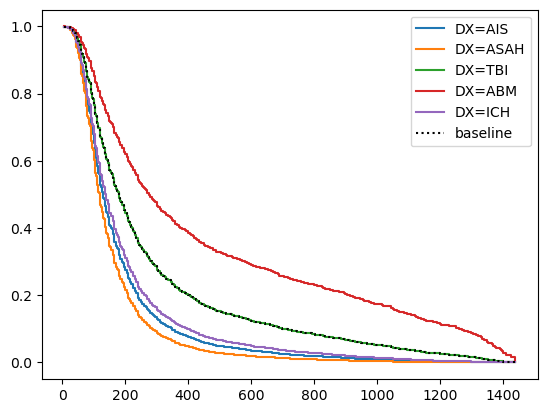
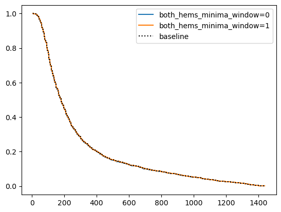
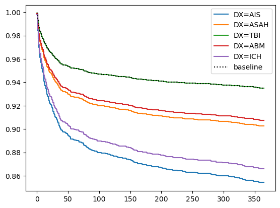
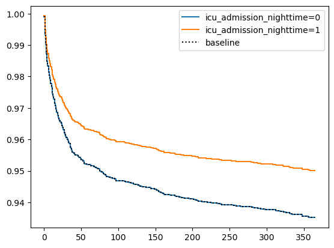
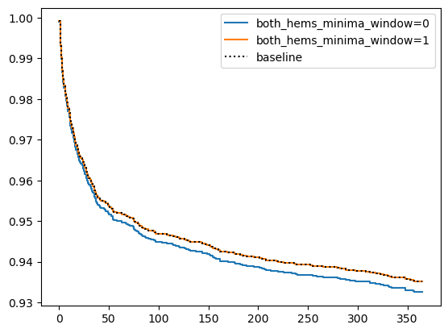

# Load dependencies
import pandas as pd
import matplotlib.pyplot as plt
import numpy as np
import pymc as pm
import arviz as az
from scipy.stats import zscore
from scipy.special import expit
from pymc import do, observe
import lifelines
from lifelines import CoxPHFitterCox PH model: time to discharge from primary ICU
hems_d = pd.read_csv('/Users/JO/PhD/neurocritical-transfers/notes/final-analysis/5-modeling-weather-v-outcome/hems_d.csv', index_col=False)
d_window = hems_d.dropna(axis=0, subset='both_hems_minima_window').copy()
d_window = d_window.dropna(axis=0, subset='sir_consciousness_level').copy()
data = d_window
n_samples = len(data)
SAMPLE = np.arange(n_samples)
HEMS_MINIMA, TREATMENT = pd.factorize(data['both_point_hems_minima'], sort=True)
SENDING_CENTER_IDX, SENDING_CENTER = pd.factorize(data['sir_icu_name'], sort=True)
RECEIVING_CENTER_IDX, RECEIVING_CENTER = pd.factorize(data['tertiary_center'], sort=True)
MONTH_IDX, MONTH = pd.factorize(data['utc_month'], sort=True)
DAY_IDX, DAY = pd.factorize(data['utc_day'], sort=True)
HOUR_IDX, HOUR = pd.factorize(data['admission_hour_utc'], sort=True)
DAYLIGHT_IDX, DAYLIGHT = pd.factorize(data['sending_daylight'], sort=True)
AFTERHOURS_IDX, AFTERHOURS = pd.factorize(data['icu_admission_afterhours'], sort=True)
DX_IDX, DX = pd.factorize(data['DX'], sort=True)
AGE_STD = zscore(data['age'])
FEMALE_IDX, FEMALE = pd.factorize(data['sex_female'], sort=True)
CONCIOUSNESS_IDX, CONCIOUSNESS = pd.factorize(data['sir_consciousness_level'], use_na_sentinel=True, sort=True)
CONCIOUSNESS_IDX = np.ma.masked_equal(CONCIOUSNESS_IDX, -1)
data['discharged'] = 1
data['age_std'] = AGE_STDcph = CoxPHFitter()
cph.fit(data, duration_col='sir_total_time', event_col='discharged', cluster_col="sir_icu_name", formula="both_hems_minima_window + DX + icu_admission_nighttime")<lifelines.CoxPHFitter: fitted with 2830 total observations, 0 right-censored observations>cph.print_summary()| model | lifelines.CoxPHFitter |
| duration col | 'sir_total_time' |
| event col | 'discharged' |
| cluster col | 'sir_icu_name' |
| robust variance | True |
| baseline estimation | breslow |
| number of observations | 2830 |
| number of events observed | 2830 |
| partial log-likelihood | -19486.48 |
| time fit was run | 2024-05-06 21:12:04 UTC |
| coef | exp(coef) | se(coef) | coef lower 95% | coef upper 95% | exp(coef) lower 95% | exp(coef) upper 95% | cmp to | z | p | -log2(p) | |
|---|---|---|---|---|---|---|---|---|---|---|---|
| both_hems_minima_window[T.True] | -0.00 | 1.00 | 0.05 | -0.10 | 0.10 | 0.90 | 1.10 | 0.00 | -0.06 | 0.96 | 0.07 |
| DX[T.AIS] | 0.99 | 2.70 | 0.13 | 0.73 | 1.25 | 2.08 | 3.51 | 0.00 | 7.42 | <0.005 | 42.96 |
| DX[T.ASAH] | 1.16 | 3.20 | 0.09 | 0.99 | 1.34 | 2.69 | 3.81 | 0.00 | 13.04 | <0.005 | 126.70 |
| DX[T.AVM] | 0.59 | 1.81 | 0.15 | 0.29 | 0.89 | 1.34 | 2.44 | 0.00 | 3.87 | <0.005 | 13.14 |
| DX[T.CFX] | -0.04 | 0.96 | 0.10 | -0.24 | 0.16 | 0.79 | 1.17 | 0.00 | -0.39 | 0.70 | 0.52 |
| DX[T.CVT] | 0.54 | 1.71 | 0.27 | 0.02 | 1.06 | 1.02 | 2.89 | 0.00 | 2.02 | 0.04 | 4.54 |
| DX[T.ENC] | 0.32 | 1.37 | 0.22 | -0.11 | 0.75 | 0.89 | 2.11 | 0.00 | 1.44 | 0.15 | 2.74 |
| DX[T.HC] | 0.97 | 2.63 | 0.18 | 0.62 | 1.31 | 1.86 | 3.72 | 0.00 | 5.47 | <0.005 | 24.38 |
| DX[T.ICH] | 0.89 | 2.44 | 0.06 | 0.78 | 1.00 | 2.18 | 2.72 | 0.00 | 16.01 | <0.005 | 189.33 |
| DX[T.SDH] | 0.53 | 1.70 | 0.10 | 0.32 | 0.73 | 1.38 | 2.08 | 0.00 | 5.09 | <0.005 | 21.38 |
| DX[T.SEP] | -1.20 | 0.30 | 0.45 | -2.09 | -0.31 | 0.12 | 0.73 | 0.00 | -2.65 | 0.01 | 6.96 |
| DX[T.TBI] | 0.52 | 1.69 | 0.06 | 0.41 | 0.64 | 1.50 | 1.90 | 0.00 | 8.91 | <0.005 | 60.72 |
| DX[T.TUM] | 0.78 | 2.17 | 0.20 | 0.38 | 1.17 | 1.46 | 3.23 | 0.00 | 3.84 | <0.005 | 12.97 |
| icu_admission_nighttime | -0.09 | 0.92 | 0.04 | -0.16 | -0.01 | 0.85 | 0.99 | 0.00 | -2.35 | 0.02 | 5.74 |
| Concordance | 0.62 |
| Partial AIC | 39000.96 |
| log-likelihood ratio test | 362.69 on 14 df |
| -log2(p) of ll-ratio test | 226.05 |
Partial effect of diagnostic group on time to discharge
cph.plot_partial_effects_on_outcome(covariates='DX', values=["AIS", "ASAH", "TBI", "ABM", "ICH"])<Axes: >
Partial effect of HEMS minima met on time to discharge
cph.plot_partial_effects_on_outcome(covariates='both_hems_minima_window', values=[0,1])<Axes: >
Cox PH model: 365-day mortality
data['days_alive_365'] = data.days_alive.fillna(365).clip(upper=365)
cph = CoxPHFitter()
cph.fit(data, duration_col='days_alive_365', event_col='d365', cluster_col="sir_icu_name", formula="both_hems_minima_window + DX + age_std + icu_admission_nighttime + sir_consciousness_level")
cph.print_summary()| model | lifelines.CoxPHFitter |
| duration col | 'days_alive_365' |
| event col | 'd365' |
| cluster col | 'sir_icu_name' |
| robust variance | True |
| baseline estimation | breslow |
| number of observations | 2830 |
| number of events observed | 563 |
| partial log-likelihood | -4186.00 |
| time fit was run | 2024-05-06 21:18:37 UTC |
| coef | exp(coef) | se(coef) | coef lower 95% | coef upper 95% | exp(coef) lower 95% | exp(coef) upper 95% | cmp to | z | p | -log2(p) | |
|---|---|---|---|---|---|---|---|---|---|---|---|
| both_hems_minima_window[T.True] | -0.04 | 0.96 | 0.13 | -0.30 | 0.22 | 0.74 | 1.25 | 0.00 | -0.31 | 0.76 | 0.40 |
| DX[T.AIS] | 0.49 | 1.63 | 0.29 | -0.08 | 1.05 | 0.92 | 2.87 | 0.00 | 1.68 | 0.09 | 3.43 |
| DX[T.ASAH] | 0.06 | 1.06 | 0.17 | -0.28 | 0.39 | 0.76 | 1.48 | 0.00 | 0.33 | 0.74 | 0.44 |
| DX[T.AVM] | 0.11 | 1.12 | 0.61 | -1.08 | 1.31 | 0.34 | 3.71 | 0.00 | 0.19 | 0.85 | 0.23 |
| DX[T.CFX] | 0.38 | 1.46 | 0.23 | -0.07 | 0.83 | 0.93 | 2.28 | 0.00 | 1.65 | 0.10 | 3.32 |
| DX[T.CVT] | 0.21 | 1.24 | 0.67 | -1.10 | 1.53 | 0.33 | 4.62 | 0.00 | 0.32 | 0.75 | 0.41 |
| DX[T.ENC] | -0.05 | 0.95 | 0.91 | -1.84 | 1.74 | 0.16 | 5.72 | 0.00 | -0.05 | 0.96 | 0.06 |
| DX[T.HC] | 0.63 | 1.88 | 0.38 | -0.12 | 1.38 | 0.88 | 3.98 | 0.00 | 1.64 | 0.10 | 3.30 |
| DX[T.ICH] | 0.39 | 1.48 | 0.17 | 0.06 | 0.73 | 1.07 | 2.07 | 0.00 | 2.33 | 0.02 | 5.67 |
| DX[T.SDH] | -0.14 | 0.87 | 0.24 | -0.61 | 0.33 | 0.54 | 1.39 | 0.00 | -0.58 | 0.56 | 0.84 |
| DX[T.SEP] | -11.78 | 0.00 | 0.64 | -13.03 | -10.53 | 0.00 | 0.00 | 0.00 | -18.51 | <0.005 | 251.74 |
| DX[T.TBI] | -0.37 | 0.69 | 0.16 | -0.69 | -0.05 | 0.50 | 0.95 | 0.00 | -2.27 | 0.02 | 5.41 |
| DX[T.TUM] | 1.59 | 4.90 | 0.24 | 1.12 | 2.06 | 3.07 | 7.81 | 0.00 | 6.67 | <0.005 | 35.21 |
| age_std | 0.62 | 1.87 | 0.06 | 0.51 | 0.74 | 1.66 | 2.10 | 0.00 | 10.36 | <0.005 | 81.06 |
| icu_admission_nighttime | -0.27 | 0.76 | 0.09 | -0.44 | -0.10 | 0.64 | 0.90 | 0.00 | -3.15 | <0.005 | 9.28 |
| sir_consciousness_level[T.II (GCS 7-12)] | 1.00 | 2.72 | 0.12 | 0.76 | 1.24 | 2.14 | 3.46 | 0.00 | 8.15 | <0.005 | 51.34 |
| sir_consciousness_level[T.III (GCS 6)] | 1.50 | 4.50 | 0.13 | 1.25 | 1.76 | 3.49 | 5.80 | 0.00 | 11.60 | <0.005 | 100.95 |
| sir_consciousness_level[T.IV (GCS 5)] | 1.34 | 3.84 | 0.16 | 1.02 | 1.67 | 2.79 | 5.29 | 0.00 | 8.23 | <0.005 | 52.21 |
| sir_consciousness_level[T.V (GCS ≤4)] | 1.90 | 6.69 | 0.12 | 1.67 | 2.13 | 5.29 | 8.46 | 0.00 | 15.89 | <0.005 | 186.57 |
| Concordance | 0.75 |
| Partial AIC | 8410.01 |
| log-likelihood ratio test | 457.43 on 19 df |
| -log2(p) of ll-ratio test | 280.16 |
Partial effect of DX group on time to death.
cph.plot_partial_effects_on_outcome(covariates='DX', values=["AIS", "ASAH", "TBI", "ABM", "ICH"])<Axes: >
Partial effect of being admitted at night (22-07) vs not. I.e. seems to be better to be admitted at night…
cph.plot_partial_effects_on_outcome(covariates='icu_admission_nighttime', values=[0,1])<Axes: >
Partial effect of HEMS minima met vs not. Non significant win for HEMS minima being met.
cph.plot_partial_effects_on_outcome(covariates='both_hems_minima_window', values=[0,1]),(<Axes: >,)